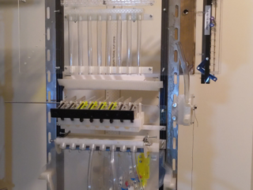
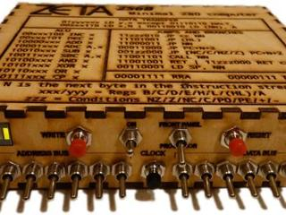
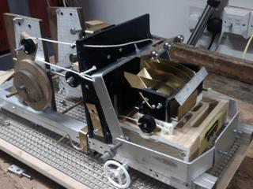
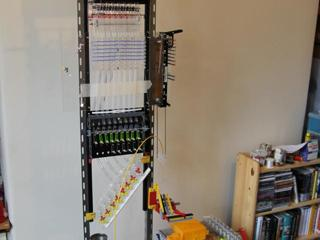
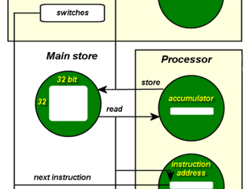
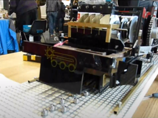
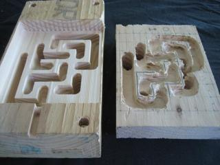
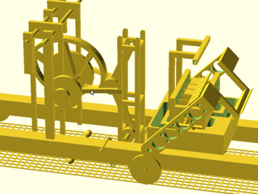

Srimech.com
This is Jim MacArthur's site for mechanical computers, electronics and other projects.
Current projects
Millihertz 5 Mechanical Computer
2025-03-07
Arm-mounted CRT Raspberry Pi unit
2018-09-15
General mechanical logic
2017-09-16
Zeta toggle-switch computer
2015-04-11
Mechanical Turing Machine
2012-06-07
List of blog entries (by date)
Millihertz 5 Progress August 2022
2022-08-21
Millihertz 5 Progress April 2020
2020-04-10
Arm-mounted CRT Raspberry Pi unit
2018-09-15
Mechanical replica of the Manchester SSEM (Baby)
2018-05-10
Mechanical array logic
2017-09-16

Mechanical decoder logic
2017-06-25

Langton's Ant with Hexbugs
2017-01-08

Sliding plate logic gates
2015-09-29
AVR Minimus servo controller
2015-04-12
Zeta toggle-switch computer
2015-04-11
Rule 110 automaton, version 2
2014-07-29

Failed experiment: Water logic gates
2014-03-23
Grue detection t-shirts
2013-06-13
Error correction of the NPL time signal
2012-11-02
Simple, headphone-controlled phone robot
2012-08-13
More 2D Game demos
2012-08-12
Investigating Raspberry Pi performance problems
2012-07-18
2D Platform games with PyGame
2012-07-03
Exhibiting the Mk2 Turing machine
2012-06-07
Chorded keyboard for mobile phones
2012-06-07
Automating layout of laser-cut models
2012-03-15

Turing Machine and Maker Faire
2011-03-16
3D printed cellular automaton
2011-03-06
Turing machine preview video
2011-01-08
December machinery
2010-12-30
BigTrak + IGEP
2010-12-22

September progress on the Turing machine
2010-11-24
November Turing machine update
2010-11-24
Robot Hackday success
2010-10-31
Fab Lab success
2010-07-31
Plans for a mechanical Turing machine
2010-07-31
Camping with dry ice
2010-07-30
Golf GTI shakedown
2009-12-15
Madlabs and Hackspaces
2009-12-15
Opening a WRT150N
2008-11-09
Electric pressure gauges
2008-11-09
Contact details
CV
RSS Feed for blog articles
Mastodon